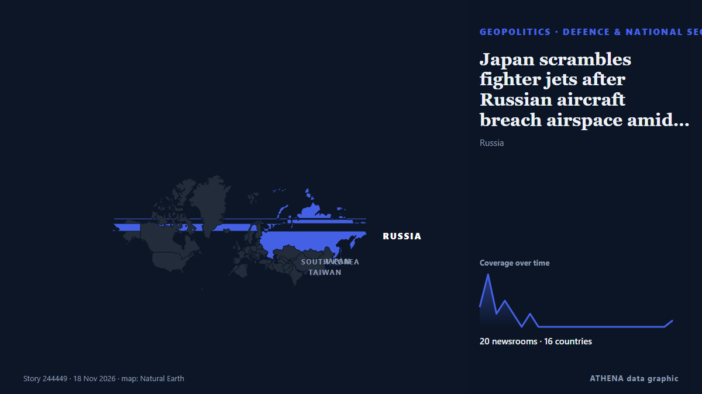

ATHENA Glaux Intelligence — Veille mondiale de l'information — chaque chiffre expliqué
Chaque titre, vérifié dans plusieurs pays.
ATHENA Glaux suit 634 médias dans le monde. Une information devient un événement vérifié seulement lorsque des médias indépendants la rapportent. Chaque événement indique qui l'a publiée en premier et un score de risque avec ses raisons.
Des articles arrivent de médias indépendants : quand deux se rejoignent sur la même histoire, un événement vérifié naît.
Comment ATHENA vérifie une information
- CollecterLes reportages arrivent de médias indépendants dans de nombreux pays.
- CroiserQuand deux médias se rejoignent sur la même information, elle devient un événement vérifié.
- ExpliquerChaque événement montre qui était le premier, jusqu'où il s'est propagé et pourquoi le risque est ce qu'il est.

GéopolitiqueJapan scrambles fighter jets after Russian aircraft breach airspace amid rising Pacific tensions
Suspected Russian aircraft entered Japanese airspace near Okinoshima, and Prime Minister Sanae Takaichi warned of instability at the Quad Leaders Summit. de Fox News (World)
Les titres sont affichés en anglais, tels que publiés.
Democrats nominate Hakeem Jeffries for next US House speaker
Democrats elected this month to the US House of Representatives nominated Hakeem Jeffries on Wednesday to lead them in the next Congress, putting him on the precipice of becoming the nation’s first… de Cyprus Mail
Bezos says 'heavily involved' in casting Robert Pattinson as Bond
It’s reported that the announcement about who will be the next James Bond is now imminent - with plenty of actors still in the frame to take on the iconic role. de The Scotsman

Navires dans les détroits du monde en ce moment
Comptages AIS en direct. Touchez ou survolez une barre pour le détail.
Opening ceremony of APEC CEO Summit 2026 held in Shenzhen
The Asia-Pacific Economic Cooperation (APEC) CEO Summit 2026 opened Tuesday in Shenzhen, south China's Guangdong Province, bringing together business and political leaders from across the… de CGTN (China)
Gulf Nations On High Alert After US Strikes Iran’s Qeshm Island
Kuwait reported drone threats and Bahrain intercepted Iranian attacks, hours after US jets reportedly struck an IRGC missile site on Qeshm Island. de News of Bahrain
‘Human’ is Cambridge Dictionary’s word of the year
Other new words added to the dictionary in 2026 included “aura farming” and “looksmaxing”. de The Straits Times
Géopolitique, politique et sécurité
Plus ›Trump’s anger with Vance is growing after VP blamed the Iran war for the Republican midterm losses: report
Vance made a shocking admission after Democrats took control of Congress in the midterms: ‘The reason we lost is the war’ de The Independent
- Renseignement et espionnage
Highly classified NSA communications network goes down
- Guerres et conflits
Iran Drone Attack Targets US Military Base in Kuwait
- Diplomatie et sommets
Pakistani Man Sentenced to 27 Years in US Prison over Iran-Backed Plot to Kill Trump
- Guerres et conflits
Russian Military Plane Crashes in Siberia, Killing 19
Économie, finance et marchés
Plus ›Hot demand lifts Anthropic IPO price to US$83 a share: Reports
This reported share price would value Anthropic at about US$1.5 trillion. de CNA (Channel NewsAsia)
- Emploi et salaires
Police in Bangladesh clash with garment workers demanding higher minimum wages
- Banques et crédit
EU proposes 45-billion-euro Ukraine loan for 2027
- Actions, obligations et marchés
GTA 6: Everything you need to know about the highly anticipated game
- Crypto et actifs numériques
After $6.3 billion crypto heist, Binance plans Asia expansion
Commerce, industrie et infrastructures
Plus ›Dutch arms manufacturer says Ukraine used its missiles to attack Crimean Bridge
The Dutch arms manufacturer Destinus said its missiles were used in Ukrainian attacks on the Crimean Bridge, the bridge that connects the occupied peninsula to Russia. de NL Times
- Commerce et accords
Mark Carney Says Canada Will Not Back Down in Trade Talks With U.S.
- Chaînes d'approvisionnement
CMA CGM triples profit as Q3 freight rates and cargo volumes rise
- Construction et infrastructures
Iran targeted US infrastructure with cyberattacks since start of war, Homeland Security chief says
- Construction et infrastructures
Waymo pulls driverless taxis from freeways after California ban
Énergie, ressources et environnement
Plus ›PACNEWS TWO, 18 NOVEMBER 2026
In this bulletin: 1. PACIFIC — Pacific-backed fossil fuel transition langugae must survive COP31: Bowen2. de Islands Business (Fiji)
- Climat et politique climatique
Albanese appears in photo with Putin but has warning for Russia
- Pétrole et gaz
Iraq Refers Jurf al-Sakhar Oil Pipeline Violations to Judiciary
- Climat et politique climatique
OPEC speaks up for fossil fuels at COP31 climate talks
- Pétrole et gaz
US Tightens Iran Blockade with Curbs on Oil Transfers at Sea, Advisory Shows
Technologie, IA et cybersécurité
Plus ›Governments warn Java flaw leaves computer systems open to hackers
Governments around the world sounded the alarm on Wednesday over a critical flaw in the popular programming language Java that could allow hackers to access computer systems, the latest high-profile… de Insurance Journal
- Espace et satellites
After 49 years in space, Nasa’s Voyager 1 probe one light-day away from Earth
- Intelligence artificielle
OpenAI gives NATO access to most advanced cybersecurity AI
- Espace et satellites
GTA 6 Launch LIVE Updates: India Gets Blockbuster Game After 13-Year Wait
- Puces et calcul
The enraging hypocrisy at the heart of the Nvidia scandal
Entreprises et investissement
Plus ›ZIM Q3 Profit Surges to $830M as Freight Rates Rise 55%
Israeli containership operator ZIM Integrated Shipping Services reported a sharp increase in third-quarter 2026 earnings, driven by stronger freight rates, higher… de Maritime Professional
- Stratégie d'entreprise
After 13-year wait, ‘Grand Theft Auto 6’ to arrive with enormous hype and expectations
- Concurrence
Sony defeats £2 billion UK claim over PlayStation Store pricing
- Fusions et acquisitions
Ghana's new Shs250bn presidential jet sparks public outrage
- Stratégie d'entreprise
David Beckham Sues for $41 Million After His Fragrance Is Sold in Gas Stations and Discount Stores
Accidents et urgences
Plus ›As Merger Reports Emerge, Cahill Loses Digital Infrastructure Finance Head to Latham
The trio of laterals arrives at Latham as Cahill becomes the latest firm to enter the merger market, according to a source familiar with the situation. de Law.com
- Accidents et urgences
Iranian Regime Never Tires of Spreading Lies – This Time, It Was About US Military Injuries
- Accidents et urgences
Risk of nuclear accident in Ukraine increasing this winter, atomic safety regulators say
- Accidents et urgences
Petrol bomb kills activist in Bangladesh ex-PM Hasina’s hometown
- Accidents et urgences
Five injured in Jordanian Black Hawk helicopter crash during training exercise
Trois façons de lire aujourd'hui
Commencez par celle qui convient à votre tempsÉvénements vérifiés
Classés selon l'ampleur de la couverture
- With new speaker, Israel parliament moves to unravel Netanyahu legacy159 médias · 56 paysRisque 5.0
- ‘It’s not up to me’: What Satya Nadella said about Jensen Huang’s Nvidia comeback141 médias · 46 paysRisque 4.8
- One missing, 11 injured in attack on ADNOC tanker in Hormuz99 médias · 39 paysRisque 4.8
- Trump arrives in China ahead of trilateral summit with Xi, Putin57 médias · 37 paysRisque 5.3
- Lee, Putin seek room for cooperation in first meeting despite strains72 médias · 33 paysRisque 3.5
Bureau d'analyse
Posez une question et lisez une évaluation argumentée d'un sujet majeur, avec ce qui la démentirait.
Ouvrir le Bureau d'analyse ›Aujourd'hui en chiffres
| 00:00 | 427 |
|---|---|
| 01:00 | 333 |
| 02:00 | 404 |
| 03:00 | 370 |
| 04:00 | 464 |
| 05:00 | 270 |
| 06:00 | 467 |
| 07:00 | 623 |
| 08:00 | 564 |
| 09:00 | 695 |
| 10:00 | 645 |
| 11:00 | 600 |
| 12:00 | 436 |
| 13:00 | 515 |
| 14:00 | 647 |
| 15:00 | 647 |
| 16:00 | 639 |
| 17:00 | 672 |
| 18:00 | 869 |
| 19:00 | 744 |
| 20:00 | 551 |
| 21:00 | 450 |
| 22:00 | 568 |
| 23:00 | 540 |
Risque des événements du jour
Signaux émergents
- Hausse soudaine · ActifJava
- Hausse soudaine · ActifLateef Bhat
- Hausse soudaine · ActifTrump and Xi
- Hausse soudaine · ActifJeff Bezos
- Hausse soudaine · ActifGrand Theft Auto
Restez informé
ATHENA Weekly Risk Picture
Les plus grands risques géopolitiques, économiques et maritimes de la semaine, recoupés et notés.
Chaque vendredi à 8 h (heure d'Athènes) · gratuit · en anglais
S'abonner gratuitementATHENA sur Telegram
Les nouvelles dès leur publication : les événements urgents de risque 6 ou plus, un récapitulatif horaire, les mises à jour des suivis de risque et le briefing quotidien à 10 h.
Gratuit · publications en anglais · désinscription à tout moment
Rejoindre le canalL'inscription est gérée par beehiiv avec double confirmation : rien de ce que vous saisissez n'est envoyé à ATHENA, et chaque numéro contient un lien de désinscription.
Suivi des risques
Plus ›Risques mondiaux — semaine 47, 2026 (16–22 nov.) ›